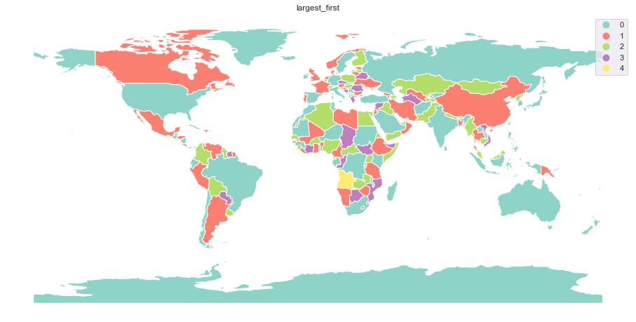
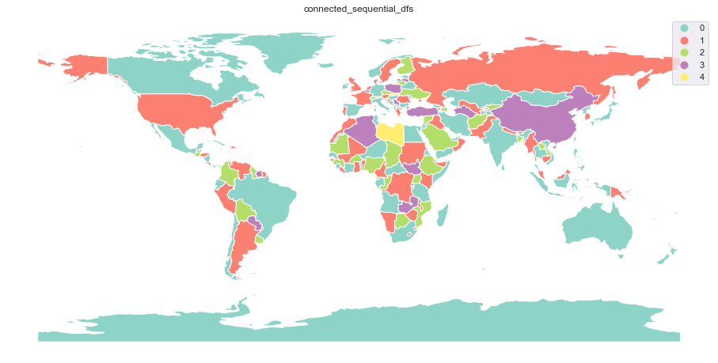
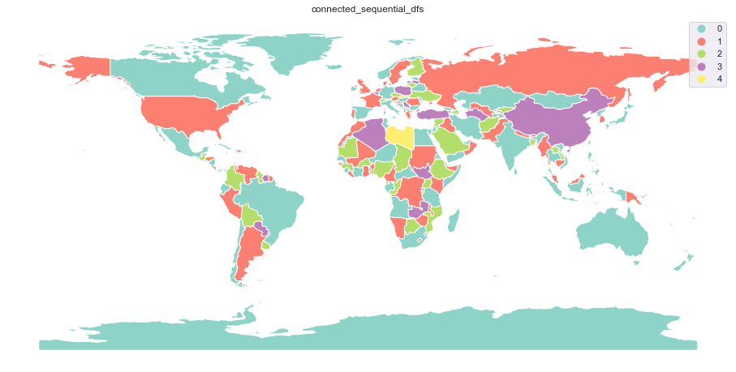

Comparison of strategies¶
Different strategies¶
Different coloring strategies lead to different results, but also have different performance. It all depends on preferences, what is the goal.
If one want visually balanced result, 'balanced' strategy could be
the right choice. It comes with four different modes of balancing -
'count', 'area', 'distance', and 'centroid'. The first
one attempts to balance the number of features per each color, second
the area covered by each color, and two last based on the distance
between features. Either represented by the geometry itself or its
centroid (a bit faster).
Other strategies might be helpful if one wants to minimize number of
colors as not all strategies use the same amount in the end. Or they
just might look better on your map. Strategies used in greedy have two origins - 'balanced' is
ported from QGIS while the rest comes from networkX.
Below is a comparison of performance and the result of each of the
strategies supported by greedy.
import geopandas as gpd
import pandas as pd
from time import time
import numpy as np
import libpysal
import seaborn as sns
sns.set()
from greedy import greedy
When using 'balanced' strategy with 'area', 'distance', or
'centroid' modes, keep in mind that your data needs to be in
projected CRS to obtain correct results. For the simplicity of this
comparison, let’s pretend that dataset below is (even though it is not).
world = gpd.read_file(gpd.datasets.get_path('naturalearth_lowres'))
Performance¶
Code below generates each option 20 times and returns the mean time elapsed together with the number of colors used.
strategies = ['balanced', 'largest_first', 'random_sequential',
'smallest_last', 'independent_set',
'connected_sequential_bfs', 'connected_sequential_dfs',
'saturation_largest_first']
balanced_modes = ['count', 'area', 'centroid', 'distance']
times = {}
sw = libpysal.weights.Queen.from_dataframe(
world, ids=world.index.to_list(), silence_warnings=True
)
for strategy in strategies:
if strategy == 'balanced':
for mode in balanced_modes:
print(strategy, mode)
timer = []
for run in range(20):
s = time()
colors = greedy(world, strategy=strategy,
balance=mode, sw=sw)
e = time() - s
timer.append(e)
world[strategy + '_' + mode] = colors
times[strategy + '_' + mode] = np.mean(timer)
print('time: ', np.mean(timer), 's; ',
np.max(colors) + 1, 'colors')
else:
print(strategy)
timer = []
for run in range(20):
s = time()
colors = greedy(world, strategy=strategy, sw=sw)
e = time() - s
timer.append(e)
world[strategy] = colors
times[strategy] = np.mean(timer)
print('time: ', np.mean(timer), 's; ',
np.max(colors) + 1, 'colors')
As you can see below, smallest_last and saturation_largest_first were
able, for this particular dataset, to generate greedy coloring using
only 4 colors. If one wants to use higher number than the minimal,
'balanced' strategy allows setting of min_colors to be used.
balanced count
time: 0.001084136962890625 s; 5 colors
balanced area
time: 0.040719664096832274 s; 5 colors
balanced centroid
time: 0.6460193037986756 s; 5 colors
balanced distance
time: 1.7454206824302674 s; 5 colors
largest_first
time: 0.00638657808303833 s; 5 colors
random_sequential
time: 0.007817411422729492 s; 6 colors
smallest_last
time: 0.012545084953308106 s; 4 colors
independent_set
time: 0.15774503946304322 s; 5 colors
connected_sequential_bfs
time: 0.010410833358764648 s; 5 colors
connected_sequential_dfs
time: 0.010940515995025634 s; 5 colors
saturation_largest_first
time: 0.03293987512588501 s; 4 colors
times = pd.Series(times)
ax = times.plot(kind='bar')
ax.set_yscale("log")

Plot above shows the performance of each strategy. Note that the vertical axis is in seconds using log scale.
Resulting maps¶
Below are all results plotted on the map.
for strategy in times.index:
ax = world.plot(strategy, categorical=True, figsize=(16, 12),
cmap='Set3', legend=True)
ax.set_axis_off()
ax.set_title(strategy)
Balance by 'count' is the fastest of all algorithms, but not always
leads to the optimal results. Colors can be close to each other and
if the sizes of polygons are disproportionally distributed, it might
not look nice:

Balance by 'area' tries to cover the same areas with each color. Consider the largest country
- Russia uses color which is not used by many other:

Balance by distance between 'centroids' generate colors to be equally distributed across the map.
However, using centroids might cause some inaccuracy (consider USA with Alaska and Hawaii):

Balance by 'distance' between polygons attempts to do the same as 'centroids', but using
the whole geometries. For that reason, it can be really slow:

Strategies 'smallest_last' and 'saturation_largest_first' are the most effective for this particular dataset
as they result in 4 colors only:


Remaining strategies:


 
